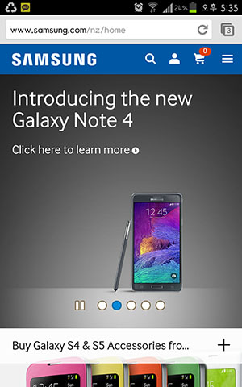

As smartphones or tablets are handy and commonly used to search information instead of computer use, these day developers consider how the webpages are displayed on the small screens. Although the SAMSUNG website has long scroll to view the images on computer screen, the long scroll on the smaller devices seems reasonable and friendly to user.

The photo is a screen shot taken on smart phone.